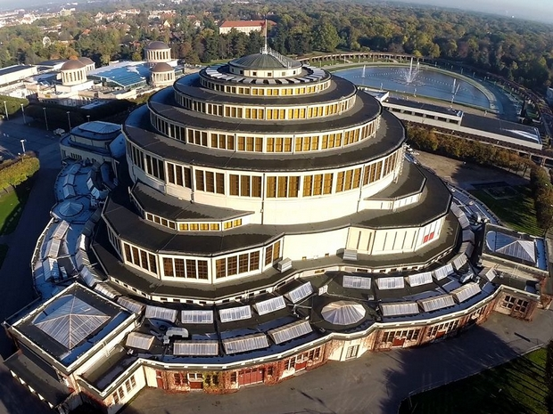

HALA STULECIA WE WROCŁAWIU

Hala Ludowa we Wrocławiu została wpisana na Listę Światowego Dziedzictwa UNESCO pod swoją pierwotną nazwą, jako Hala Stulecia (Centennial Hall in Wrocław). Jest to nazwa znana powszechnie i stosowana przez badaczy architektury od chwili wzniesienia tej monumentalnej budowli do czasów obecnych.
Jest to budowla przełomowa w historii architektury wykorzystującej żelazobeton. Wzniesiona została w latach 1911-1913 przez architekta Maxa Berga na terenach Wystawy Stulecia jako budowla wielofunkcyjna służąca rekreacji. Zbudowana na planie koła z czterema absydami, Hala mieści ogromną cylindryczną widownię na około 6000 osób. Wznosząca się na wysokość 23 metrów kopuła zwieńczona jest latarnią ze stali i szkła. Hala Stulecia jest rozwiązaniem pionierskim pod względem architektonicznym i inżynierskim, dokumentującym przenikanie się różnych wpływów we wczesnych latach XX wieku i stanowiącym zasadniczy punkt odniesienia dla dalszego rozwoju budownictwa w dziedzinie dużych konstrukcji zbrojonych.